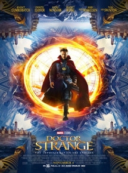

Diretor: Scott Derrickson.
Elenco: Benedict Cumbercatch, Rachel MacAdams, Tilda Swinton.
Gênero: Super Herói.
Censura: 12 anos.
Tempo de duração: 1h 55m.
Sinopse: Após sua carreira ser destruída, um brilhante, porém arrogante, cirurgião ganha uma nova chance em sua vida quando um feiticeiro o treina para se tornar o Mago Supremo.